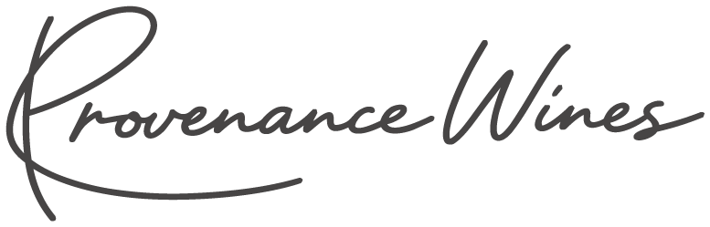

Wines that know where they come from.
A proposed visual identity for the Provenance Wines website, built from the signature logo and its blush-on-charcoal colourway. Like every Belmonte Beverage Group brand, it is a theme of the shared frontend: the same components, styled for Provenance.
Where this comes from
The only brand material supplied is the logo file (LOGO_PROVENANCE_WINES_OVERVIEW). Its last page, a blush signature on charcoal, sets the palette. Everything else on this page is a proposal for the client to confirm.
Signature logo
Handwritten “Provenance Wines” in charcoal, blush and white. Charcoal #474545 and Blush #EEBEB1 are measured from the PDF.
Style, not structure
Provenance reuses the BBG components and CMS content. Only colours, type, shapes and small interaction details change.
Proposal
Supporting colours, typefaces, copy, wines, producers and people are all examples to react to.
Name the place. Name the producer.
The signature logo is personal and warm. The voice follows it: calm, specific and close to the people who make the wine. Every wine is introduced through its place and its producer.
- Norwegian restaurants, wine bars and hotels
- Producers looking for a partner in Norway
- Not consumers: Norwegian law bans alcohol advertising, so the site speaks to the trade
- Lead with the place: village, slope, soil
- Name the producer and what they decide
- Short sentences, no superlatives
Logo
A single signature in three colourways. The strokes are thin, so the logo needs room and a calm background.

Charcoal on Porcelain
White on CharcoalClear space and size Proposal
- Blush or white on Charcoal and dark photography
- Charcoal on Porcelain and Shell
- Keep the long underline stroke of the P intact
- Set the logo below 150 px wide
- Place Blush or white artwork on light backgrounds
- Recreate the signature in a script font
The supplied PNG exports use pure black (#000000) and a lighter pink (#F8BAAC), while the PDF uses Charcoal (#474545) and Blush (#EEBEB1). The prototype recolours the artwork to the PDF values; the final values need confirming.
Colour
Charcoal and Blush come from the logo. Four proposed colours make them work on screen: a warm Porcelain ground, a Shell surface, Rosewood for accent text (Blush is too light for text on light backgrounds) and Stone for secondary text.
From the logo
Proposed Proposal
Approved pairings
Contrast ratios are calculated live from the tokens. Body text needs at least 4.5:1 (WCAG AA); large headings at least 3:1.
Typography
Fraunces, a soft serif set light, carries the warmth of the signature without competing with it. Instrument Sans keeps information clear. Labels use Fraunces italic instead of uppercase, as a quieter echo of the handwriting. Both families are on Google Fonts with Norwegian characters.
Wines that know where they come from.
Æ Ø Å æ ø å · Côtes de Provence · 0123456789
Small producers, single places and honest wines, selected for Norway.
Æ Ø Å æ ø å · Grüner Veltliner · 0123456789
Type scale
| Token | Sample | Desktop / mobile | Used for |
|---|---|---|---|
--provenance-display | Provenance | 76 / 40 px | Banner, producer and article titles |
--provenance-h1 | Our selection | 62 / 34 px | Page titles, product name |
--provenance-h2 | Journal | 44 / 28 px | Quotes, newsletter title |
--provenance-h3 | Made for the table. | 30 / 22 px | Intro lead, paragraph headings |
--provenance-large | Domaine Vaillant-Rey | 26 / 20 px | Producer list, characteristics |
--provenance-medium | Côtes de Provence Rosé 2025 | 21 / 17 px | Tile names, prices |
--provenance-body | Every bottle can be traced to a producer, a place and a vintage. | 17 px · 1.6 | Body copy (Instrument Sans 400) |
--provenance-label | About the producer | 16 px italic | Labels and eyebrows (Fraunces italic, Rosewood) |
--provenance-caption | Rosé | France | 0,75 L | 13 % | 12 px | Product key info, captions |
Shape & layout
Centred, airy compositions and one recurring shape: the arch. Portraits, producer images and article thumbnails sit in an arch that echoes the loops of the signature. Interactive elements are pills; everything else stays square.
| Rule | Value | Note |
|---|---|---|
| Arch | border-radius: 999px 999px 0 0 | On portrait-format images only (4:5) |
| Pills | border-radius: 999px | Vinmonopolet link, filter tags |
| Hairlines | rgba(71,69,69,.16) on light, rgba(250,246,244,.2) on Charcoal | Tables, paragraph rows, header |
| Alignment | Centred | Intro (textAlignment: center), product page, about-producer, footer and menu |
| Motion | cubic-bezier(.33, 0, .33, 1) | Same curve as --ease-in-out-belmonte; respects reduced motion |
Icons
Thin Charcoal linework with rounded ends. The Provenance arrow is long and horizontal, like the underline stroke of the signature.
Photography
No photography was supplied. Proposed direction: warm natural light, producers at work and close-ups of soil, vines and hands, with soft blush and stone tones rather than saturated colour. Until real images arrive, the prototype uses illustrations in the palette.
Component library
Each preview is the Provenance style of a component that already exists in the BBG frontend. The caption names the component in the code.
Links and labels
Product tile
Article tile and team member
Intro, quote and counter
“A wine should taste of the place it comes from.”Provenance Wines
Filters and search
Type
Country
Product price and specification
About the producer band
Newsletter
Theme implementation
How the tokens map to the BBG frontend. The component-by-component list is in DESIGN.md.
| Provenance token | App target | Value |
|---|---|---|
--provenance-charcoal … --provenance-stone | :root + @theme in globals.css (bg-theme-*, text-theme-*) | 6 colours + Blush Soft |
--provenance-font-serif | font-provenance (theme font) via src/fonts/index.ts | Fraunces 300–500 + italic |
--provenance-font-sans | Provenance replacement for font-global | Instrument Sans 400/500/600 |
--provenance-display … --provenance-medium | --font-*-clamp in [data-domain="provenance"] | 76 / 62 / 44 / 30 / 26 / 21 px max |
--provenance-arch | Tailwind rounded-t-full on image wrappers in the Provenance style maps | 999px 999px 0 0 |
| Logo | provenance-brand.tsx in brand-renderer.tsx; group logo branch in logo-renderer.tsx | Needs SVG artwork |
What we need to confirm
Colour values
The PDF and the PNG exports differ (Charcoal #474545 vs black, Blush #EEBEB1 vs #F8BAAC). Which are the master values?
Typefaces and palette
Fraunces, Instrument Sans and the four supporting colours are proposals.
SVG logo
The SVG files in the package were empty. Vector artwork is needed for the header, footer and favicon.
Copy
No website text was supplied. All headings and body text are placeholders in the proposed voice.
Photography
Producers, vineyards and team portraits.
Content
Real producers, wines, articles and people in Crystallize.